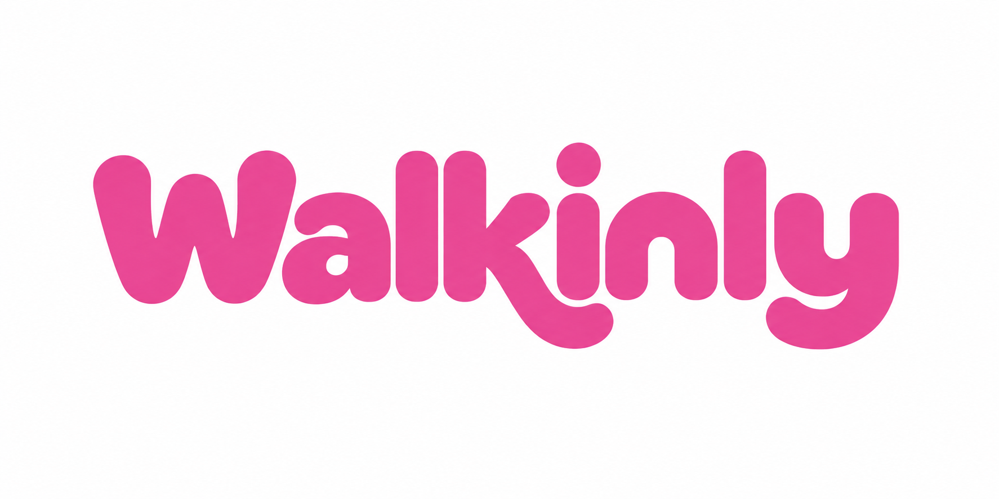

Eine freundliche Wortmarke mit Charakter. Pink setzt den Akzent; klare Typografie und ruhige Flächen schaffen Übersicht.

#EC4899
Marke & Akzente
#DB2777
Buttons mit weisser Schrift
#FCE7F3
Sanfte Flächen
#1D1D1F
Text & Hierarchie
Basis: Warmweiss #F8F7F4 · Weiss #FFFFFF · Linien #E7E5E4. Die Original-PNG enthält leichte Farbvariation; die HEX-Werte definieren die ergänzende Gestaltung.
Dein nächsterSalonbesuch.
Die klare Begleitschrift gibt der runden Wortmarke einen ruhigen Rahmen.
Titel 600–700 · Text 400–500Hier lokal mit Arial als Fallback, falls Geist nicht installiert ist.
Entdecke etwas Neues.
Finde Salons in deiner Nähe und erfahre mehr über ihr Angebot.
Beispielgestaltung · 8-px-Abstandsraster · Karten 24 px · Buttons 16 px
Das freigegebene Motiv liegt als PNG mit weissem Hintergrund vor, 1774 × 887 px. Es ist keine Vektordatei.
Transparente, einfarbige und skalierbare Ausgaben sowie ein App-Icon benötigen eine separate Reinzeichnung. Keine zusätzlichen Effekte oder Veränderungen der Bögen.
Lust aufeinen neuenLook?
Entdecke Salons in deiner Nähe.
Social-Media-Motiv
Entdecke unseren Salonauf Walkinly.
Aushang · Entwurf ohne erfundenen QR-Code oder Link
«Entdecke Salons in deiner Nähe.»
Wir duzen, schreiben kurze Sätze und verwenden Schweizer Rechtschreibung. Verfügbarkeit und Wartezeiten nennen wir nur, wenn aktuelle Daten vorliegen.